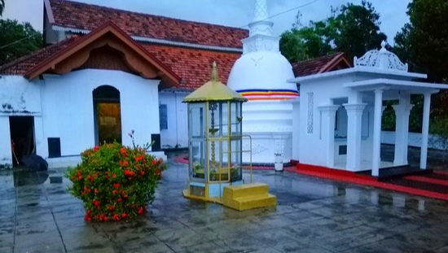

Welcome to Bentota Tourism
Bentota Wanawasa Rajamaha Viharaya

Bentota is a resort town on Sri Lanka’s southwest coast. Its long Bentota Beach stretches north, where it becomes a sandy strip known as Paradise Island, parallel to Bentota Lagoon. Eventhough this town now best known for its beaches, history of this town goes as far as 2nd century BC and has been a central city in the Buddhist civilisation in Sri Lanka.
Three hundred meters passing the Bentara Bridge, there is a road to the left called Circular Road which goes around the horseshoe shaped river. Five ancient Buddhist temples can be found along this route.
- Udakotuwa Bodhi Sameepa Rajamaha Viharaya
- Vanawasa Rajamaha Viharaya
- Bodhimalu Rajamaha Viharaya
- Galapatha Rajamaha Viharaya
- Udakotuwa Bodhi Sameepa Rajamaha Viharaya
- Bemvehera Gane Rajamaha Viharaya
Although now operating as five different temples, it is believed that these 5 temples had belonged to one large temple complex covering over 6 square kilometers in the the ancient past. Based on the archeological studies, this temple complex has been found to be built by king Devanampiyatissa (250-210 BC) according to Mr. R. Ayrton, Commissioner of Archeology (1912-1913). During the reign of Polonnaruwa kingdom, all the five temples has been under the Galapatha Viharaya.
During the Portuguese occupation of the low country (1505 to 1658), this temple too faced the same fate of all other Buddhist temples in the coasted areas. Demolished and looted of all valuables by the Portuguese, this temple stayed hidden inside the jungles until it was re-discovered in mid 1800’s.
The Bodhi Sameepa Viharaya is the place where a secodary Bodhi Tree was located, Vanawasa Rajamaha Viharaya is where the Bikkus residential ‘Kuti’ were located, Bodhimaluwa Rajamaha Viharaya is where the sapling of the Sri Maha Bodhi was planted, the main image house and the relics of Maha Kasyapa Thero was enshrined at Galapatha Viharaya and Gane Rajamaha Viharaya is where the main Vehera (stupa) was located.